习近平总书记曾指出，我们把思想建设作为党的基础性建设，用新时代中国特色社会主义思想凝心铸魂，弘扬伟大建党精神，持续开展党内集中教育，使党员、干部补足精神之钙，坚守共产党人精神家园。关于习近平总书记对“中国精神”方面的论述，下列说法正确的有（）。
①全军高级干部要牢记初心使命，带头弘扬延安精神，带头加强革命性锻造，扛起党和人民赋予的历史重任
②希望中国工程院在新的起点上，发挥国家战略科技力量作用，弘扬科学家精神，引领工程科技创新，加快突破关键核心技术
③广大青年要继承和发扬长征精神，坚定不移听党话、跟党走，争做有理想、敢担当、能吃苦、肯奋斗的新时代好青年
④希望广大劳动群众大力弘扬劳模精神、劳动精神、工匠精神，爱岗敬业、创新创造
A.1 项 B.2 项 C.3 项 D.4 项
答案点击查看答案与解析
生态环境部、自然资源部等部门日前联合印发《生态保护“十五五”规划》。根据规划，下列说法错误的是（）。
A.统筹考虑区域生态结构完整性、生态功能重要性，优化生态保护与修复监管重点区域
B.持续巩固以“三区四带”为骨架的国家生态安全屏障体系
C.优化生态保护红线范围
D.全面推进以自然保护区为主体的自然保护地体系建设
答案点击查看答案与解析
公有制经济和非公有制经济都是社会主义市场经济的重要组成部分，都是我国经济社会发展的重要基础。下列相关说法正确的有（）。
①毫不动摇鼓励支持引导公有制经济发展，毫不动摇巩固和发展非公有制经济
②要坚持公有制主体地位不能动摇，国有经济主导作用不能动摇
③民营经济是非公有制经济的主要形式，是推进中国式现代化的生力军
④民营企业是中国特色社会主义的重要物质基础和政治基础，是我们党执政兴国的重要支柱和依靠力量
A.1 项 B.2 项 C.3 项 D.4 项
答案点击查看答案与解析
为进一步提高农村留守儿童和困境儿童关爱服务质量，健全农村留守儿童关爱服务体系，民政部等印发了《农村留守儿童和困境儿童关爱服务质量提升三年行动方案》。关于农村留守儿童和困境儿童关爱服务，下列表述不正确的是（）。
A.盘活各类民政服务机构人员、场所等资源，优先用于失独老人和未成年人救助保护机构建设
B.学校要将农村留守儿童和困境儿童作为重点关爱对象，培养其良好道德品质和文明行为
C.对于符合临时监护条件的农村留守儿童和困境儿童，民政部门可以采取委托亲属抚养、家庭寄养等方式进行安置
D.省级和地市级民政部门设立的儿童福利机构全面优化提质，实现儿童养育、医疗、康复、教育、社会工作一体化发展
答案点击查看答案与解析
（）是辩证唯物主义矛盾观点和矛盾分析方法的时代表达和时代升华。
A.坚持人民至上 B.坚持自信自立 C.坚持胸怀天下 D.坚持问题导向
答案点击查看答案与解析
习近平指出，吹灭别人的灯，不会让自己更加光明；阻挡别人的路，最终只会把自己的路堵住。这体现了哪些哲学道理（）。
①一切事物都与周围事物处于相互依赖、相互影响、相互制约的普遍联系之中
②矛盾具有特殊性，要做到具体问题具体分析
③事物的发展表现为螺旋式上升和波浪式前进的过程
④矛盾具有同一性，矛盾双方在一定条件下相互依存、相互转化
A.①② B.①③ C.①④ D.②④
答案点击查看答案与解析
我国数学家华罗庚在一次报告中以“一支粉笔多长为好”为例来讲解他所倡导的优选法。对此，他解释道：“每支粉笔都要丢掉一段一定长的粉笔头单就这一点来说，愈长愈好。但太长了，使用起来很不方便，而且容易折断。每断一次，必然浪费一个粉笔头，反而不合适。因而就出现了粉笔多长合适的问题——这就是一个优选问题。”所谓优选问题，从辩证法的角度看，就是要（）。
A.注重量的积累 B.保持事物质的稳定性 C.坚持适度原则 D.全面考虑事物属性的多样性
答案点击查看答案与解析
习近平总书记强调，加强党风廉政建设，一体推进不敢腐、不能腐、不想腐，严格落实中央八项规定精神，督促党员、干部特别是领导干部清廉自守、廉洁从政、干净做事。根据《中国共产党纪律处分条例》，下列违纪情况属于违反廉洁纪律的是（）。
A.在重大原则问题上不同党中央保持一致且有实际言论、行为或者造成不良后果的
B.拒不执行党组织的分配、调动、交流等决定的
C.干涉生产经营自主权，致使群众财产遭受较大损失的
D.滥用职权或者职务上的影响操办婚丧喜庆事宜，造成不良影响的
答案点击查看答案与解析
把党的建设作为一项伟大工程来推进，是我们党领导人民进行伟大社会革命的重要法宝。下列关于新时代党的建设，说法正确的有（）。
①全面从严治党是新时代党的建设的鲜明主题
②新时代党的建设要以坚定理想信念宗旨为主线
③政治建设是基础性建设，决定党的建设方向和效果
④思想建设的根本任务是用党的创新理论武装全党
A.1 项 B.2 项 C.3 项 D.4 项
答案点击查看答案与解析
开放是中国式现代化的鲜明标识。必须坚持对外开放基本国策，坚持以开放促改革，依托我国超大规模市场优势，在扩大国际合作中提升开放能力，建设更高水平开放型经济新体制。关于完善高水平对外开放体制机制，下列相关表述正确的有()。
①维护以世界贸易组织为核心的多边贸易体制，积极参与全球经济治理体系改革，提供更多全球公共产品
②建设大宗商品交易中心，建设全球集散分拨中心，支持各类主体有序布局海外流通设施
③营造市场化、法治化、国际化一流营商环境，依法保护外商投资权益
④巩固东部沿海地区开放先导地位，提高中西部和东北地区开放水平，加快形成陆海内外联动、东西双向互济的全面开放格局
A.1 项 B.2 项 C.3 项 D.4 项
答案点击查看答案与解析
关于永久基本农田，下列说法正确的有（）。
①永久基本农田划定后，任何单位和个人不得擅自调整、占用或者改变用途
②县级政府可在城镇开发边界调整过程中，适当调整永久基本农田保护红线
③可根据城市规划在永久基本农田中挖湖造景，建设绿化带
④禁止占用永久基本农田堆放固体废弃物，填埋垃圾
A.1 项 B.2 项 C.3 项 D.4 项
答案点击查看答案与解析
习近平总书记指出“我们所推进的现代化，既有各国现代化的共同特征，更有基于国情的中国特色。”下列关于中国式现代化理解错误的（）。
A.现代化进程要齐步走，发挥各民族、各地区优势资源
B.人与自然和谐共生的现代化
C.走和平发展道路的现代化
D.摒弃了以资本为中心的现代化
答案点击查看答案与解析
党的领导是进一步全面深化改革、推进中国式现代化的根本保证。关于提高党对进一步全面深化改革、推进中国式现代化的领导水平，下列说法正确的有（）。
①党中央领导改革的总体设计、统筹协调、整体推进
②以调动全党抓改革、促发展的积极性、主动性、创造性为着力点，完善党的建设制度机制
③深入推进党风廉政建设和反腐败斗争。健全政治监督具体化、精准化、常态化机制
④明确各项改革实施主体和责任，把重大改革落实情况纳入监督检查和巡视巡察内容，以理论基础和人民群众满意度检验改革
A.1 项 B.2 项 C.3 项 D.4 项
答案点击查看答案与解析
下列关于完善实施区域协调发展战略机制的说法错误的是（）。
A.推动东部地区更好发挥高质量发展动力源作用
B.高标准高质量推进雄安新区建设
C.推动成渝地区双城经济圈建设走深走实
D.优化长江经济带发展、黄河流域生态保护和高质量发展机制
答案点击查看答案与解析
中国致力于推动共建地球生命共同体，积极参与全球环境治理，是全球生态文明建设的重要参与者、贡献者、引领者。关于碳达峰、碳中和工作，下列说法不正确的是（）。
A.我国的目标是2030年前实现碳达峰、2060年前实现碳中和
B.实现碳达峰、碳中和是一场广泛而深刻的经济社会系统性变革
C.要以经济社会发展全面绿色转型为关键
D.要坚定不移走生态优先、绿色低碳的高质量发展道路
答案点击查看答案与解析
中共中央印发《加快建设农业强国规划（2024—2035年）》。下列说法正确的是()。
A.把增加农民收入作为头等大事
B.健全耕地数量、质量、生态“三位一体”保护制度体系
C.守牢15.46亿亩耕地和18.65亿亩永久基本农田保护红线
D.实施耕地有机质提升行动，加强盐碱地保护利用和退化耕地治理
答案点击查看答案与解析
团结奋斗是中国人民创造历史伟业的必由之路，关于团结奋斗，下列说法正确的是( )。
①团结奋斗是中国共产党和中国人民最显著的精神标识
②必须发扬斗争精神，把握斗争方向，掌握斗争规律，增强斗争本领，有效应对重大挑战、抵御重大风险、克服重大阻力、解决重大矛盾
③奋斗是艰辛的、曲折的、暂时的，我国正处于实现中华民族伟大复兴攻坚克难的重要阶段
④团结奋斗是党领导人民创造历史伟业的必由之路
A.①②③ B.①②④ C.①③④ D.②③④
答案点击查看答案与解析
党的二十大报告指出，全面建成社会主义现代化强国，总的战略安排是分两步走。下列说法错误的是（）。
A.党的的十一届三中全会提出了“三步走”战略目标
B.党的十五大提出了“两个一百年”的奋斗目标
C.从二〇二〇年到二〇三五年基本实现社会主义现代化
D.从二〇三五年到本世纪中叶把我国建成富强民主文明和谐美丽的社会主义现代化强国
答案点击查看答案与解析
下列关于新发展阶段、新发展理念、新发展格局的论述，正确的是（）。
①把握新发展阶段是贯彻新发展理念、构建新发展格局的现实依据
②贯彻新发展理念为把握新发展阶段、构建新发展格局提供了行动指南
③构建新发展格局是应对新发展阶段机遇和挑战、贯彻新发展理念的战略选择
④进入新发展阶段、贯彻新发展理念、构建新发展格局，是由我国经济社会发展的逻辑决定，三者紧密关联
A.1 项 B.2 项 C.3 项 D.4 项
答案点击查看答案与解析
习近平总书记强调，要推动全体人民共同富裕取得更为明显的实质性进展。下列关于共同富裕，说法正确的是（）。
①共同富裕是中国特色社会主义的本质要求，是中国式现代化的重要特征
②实现共同富裕不仅是经济问题，而且是关系党的执政基础的重大政治问题
③要从全局角度来把握共同富裕
④扎实推进共同富裕，必须坚持正确的原则和科学的思路
A.1 项 B.2 项 C.3 项 D.4 项
答案点击查看答案与解析
2026年9月1日，国家能源局宣布，我国（）装机历史性超过煤电，成为装机规模最大的电源品类。
A.光伏发电 B.核能发电 C.水力发电 D.风力发电
答案点击查看答案与解析
1934年10月，第五次反“围剿”失败后，中央主力红军为摆脱国民党军队的包围追击，被迫实行战略性转移，退出中央根据地，进行长征。下列关于长征，说法正确的有（）。
①1934年中共中央率领红军从福建瑞金等地出发
②1935年召开的遵义会议事实上确立了毛泽东同志在党中央和红军的领导地位
③长征的胜利，极大地促进了党在政治上和思想上的成熟
④毛泽东诗句“金沙水拍云崖暖，大渡桥横铁索寒”概括了红军长征途中四渡赤水的历史事件
A.1 项 B.2 项 C.3 项 D.4 项
答案点击查看答案与解析
关于行政复议和行政诉讼两种救济程序，下列说法错误的是（）。
A.行政复议体现了行政体系的内部监督，行政诉讼体现的是外部监督
B.两者的审查范围不同，行政诉讼只审查行政行为的合法性，对实质合理性一般不审查
C.可以申请行政复议的案件也能提起行政诉讼
D.二者受理机关的性质不同，复议的受理机关是行政机关，诉讼的受理机关是司法机关
答案点击查看答案与解析
张三是甲县统计局的一级主任科员，因危险驾驶罪被判处拘役三个月，甲县统计局决定开除张三。下列说法不正确的是（）。
A.张三不得再次录用为公务员
B.甲县统计局开除张三的决定可以以口头形式通知张三
C.针对张三的危险驾驶罪，如果监察机关已经作出政务处分决定，甲县统计局不再给予处分
D.张三不服开除决定，可以申请复核
答案点击查看答案与解析
根据我国行政强制法的规定，下列表述不正确的是（）。
A.行政机关不得在夜间或者法定节假日实施行政强制执行，但情况紧急的除外
B.行政机关在紧急情况下可以对居民生活采取停止供水、供电、供热、供燃气等方式迫使当事人履行相关行政决定
C.对违法的建筑物，当事人在行政机关公告的限期内不自行拆除，又在法定期限内不申请行政复议或者提起行政诉讼的，行政机关可以依法强制拆除
D.没有行政强制执行权的行政机关应当申请人民法院强制执行
答案点击查看答案与解析
甲14岁，利用积蓄的压岁钱购买彩票，偶然中得20万元大奖。甲从中拿出6万元购买了其梦寐以求的健身器材。下列说法正确的是（）。
A.甲无权获得该20万元大奖
B.甲购买该健身器材的法律行为属于有效法律行为
C.甲购买该健身器材的法律行为属于效力待定的法律行为
D.甲购买该健身器材的法律行为属于无效法律行为
答案点击查看答案与解析
赠与合同是指赠与人将自己的财产无偿给予受赠人，受赠人表示接受该赠与的合同。以下哪一选项为不可撤销的赠与合同（）。
A.甲向灾区捐赠价值5万元的救灾物资
B.乙赠与其孙子价值2万元的金条
C.丙在情人节赠送其女友价值1万元的名牌包
D.丁赠与同学价值5000 元的自行车作为生日礼物
答案点击查看答案与解析
在商品市场上，需求和供给状况会决定均衡价格和均衡数量。若出现供小于求的情况，下列说法正确的是（）。
A.消费者之间的竞争会导致价格上升，促使生产者扩大生产，最后供需双方达到均衡状态
B.生产者之间就会展开价格竞争，随着价格的降低，消费者的需求量会逐渐上升，最后供需双方达到均衡状态
C.消费者之间的竞争会导致价格下降，促使生产者扩大生产，最后供需双方达到均衡状态
D.生产者之间就会展开价格竞争，随着价格的上升，消费者的需求量会逐渐上升，最后供需双方达到均衡状态
答案点击查看答案与解析
商品的价值由商品所耗费的劳动量决定，一个人越懒，越不熟练，他制造出来的商品就越有价值，因为他制造商品需要花费的时间越长。这一观念的错误在于（）。
A.混淆了简单劳动时间和复杂劳动时间 B.混淆了具体劳动时间和抽象劳动时间 C.混淆了社会必要劳动时间和剩余劳动时间 D.混淆了个别劳动时间和社会必要劳动时间
答案点击查看答案与解析
下列关于茶的说法错误的是（）。
A.六大茶类体系包括绿茶、黄茶、黑茶、白茶、青茶（乌龙茶）、红茶
B.茶叶中的茶多酚具有抗氧化作用，茶氨酸可缓解焦虑，茶多糖辅助降血糖
C.“普洱景迈山古茶林文化景观”是全球首个“茶”主题世界遗产
D.《茶经》是贾思勰所著，是世界上现存最早、最完整、最全面的茶学专著
答案点击查看答案与解析
下列关于光学现象的解释，正确的是（）。
A.夜晚行车时车内不开灯，是为了避免车内景物通过挡风玻璃发生折射，影响司机视线
B.三棱镜将白光分解为七色光，说明白光是由多种色光混合而成的，其原理是光的色散
C.潜水员在水中看岸上的树木，会觉得树木“变矮”，这是光的反射形成的虚像
D.近视眼镜能矫正视力，是因为它对光线有会聚作用，可将成像点移到视网膜上
答案点击查看答案与解析
下列物理常识表述正确的是（）。
A.医生可以用B超来检查胎儿的发育情况，说明声波可以传递能量
B.航母舰载机指挥员佩戴耳罩，目的是在传播过程中减弱噪声
C.“声纹锁”辨别声音的主要依据是音色
D.超声波的频率要比次声波高，传播速度也比次声波快
答案点击查看答案与解析
下列关于诗句中蕴含的生物现象表述错误的是（）。
A.种瓜得瓜，种豆得豆——遗传
B.春色满园关不住，一枝红杏出墙来——植物的向光性
C.人间四月芳菲尽，山寺桃花始盛开——光照对生物的影响
D.羌笛何须怨杨柳，春风不度玉门关——非生物因素的影响
答案点击查看答案与解析
关于用电知识，下列说法正确的是（）。
A.我国家庭照明电路的电压为36V
B.检验物体是否带电的仪器是电流表
C.家庭电路安装空气开关，是防止漏电而采取的措施
D.当给电动车充电时，电动车的蓄电池相当于用电器
答案点击查看答案与解析
下列公文标题，写法错误的是（）。
A.《关于调查吉林长生生物公司疫苗造假事件的情况》
B.《深圳市经贸信息委关于同意松岭加油站歇业的批复》
C.《关于深圳市人民政府工作报告的决议》
D.《广东省人民政府办公厅关于全省政务服务网切换上线的通知》
答案点击查看答案与解析
在其他动物体内，抗体的重轻链配对组成的Y形结构可以对抗种类繁多的微生物入侵者。这种结构久经考验，是重链和轻链蛋白质的编码基因片段混合重排的结果。由于每一条链对应的基因排列方式多种多样，所以组合起来就可以千变万化，而纳米抗体只有重链，多样性________。填入画横线部分最恰当的一项是（）。
A.大打折扣 B.寥寥无几 C.微乎其微 D.乏善可陈
答案点击查看答案与解析
精神载体和政治载体缺一不可，否则文明就无所依赖，站立不稳。两个载体的关系决定了文明的强弱和延续；如果相互支撑、彼此衔接，文明就________，长盛不衰；倘若有一无一或搭配不当，文明就发育不全、________依次填入画横线部分最恰当的一项是（）。
A.青春永驻 捉襟见肘 B.生生不息 难以为继 C.繁荣昌盛 左支右绌 D.经久不衰 有心无力
答案点击查看答案与解析
随着采购数字化转型的不断深入，一系列新问题、新挑战也相继涌现。一个典型问题就是，虽然很多企业搭建了线上采购平台，引入了大量供应商、品牌商，却没有________的平台治理能力，一些涉及商品管理、合规管理、质量控制、供应商管理、价格管理等方面的问题逐渐显现，依靠传统人工审核的解决方式________，采购者的决策成本也随之几何指数快速上升。如何借助大数据和技术手段解决采购难题、降低决策成本，成为企业的迫切需求。依次填入画横线部分最恰当的一项是（）。
A.匹配 杯水车薪 B.相应 按部就班 C.适应 寸步难移 D.对等 循序渐进
答案点击查看答案与解析
文学为了使大众喜闻乐见，广告为了鼓动读者购买物品，新闻为了及时报道社会活动的变化，科技为了普及最新成果，都需要不断________引进新的词汇，调整语言的结构形式，以便跟上日常使用的口头、书面语的发展。相比之下，法律语言却显得异常地________。依次填入画横线部分最恰当的一项是（）。
A.创造 墨守成规 B.产生 漠不关心 C.发明 泰然自若 D.创新 一成不变
答案点击查看答案与解析
在新发展格局中，国内循环作为基础和主体，是解决我国发展矛盾的主要方面；双循环作为延伸和补充，是拓展我国发展空间的________。国内循环与国际循环相互依存、相互促进，构成了一个优势互补、________的有机统一整体。依次填入画横线部分最恰当的一项是（）。
A.唯一道路 合作共赢 B.不二法门 相得益彰 C.正确选择 互利共赢 D.必由之路 紧密联系
答案点击查看答案与解析
戏曲是植根于乡土，植根于民间的曲艺形式。千百年来，有着它孕育、生成、发展、鼎盛的历史________，不管哪一个时期，群众对戏曲的关注、热爱，才是戏曲向前发展的不竭动力和深厚________o依次填入画横线部分最恰当的一项是（）。
A.基因 积淀 B.传承 底蕴 C.脉络 土壤 D.流变 根基
答案点击查看答案与解析
细化立法，增强处罚的可操作性，缩小行政裁量的空间，________裁量的随意性，让行政处罚在法定幅度内“不任性”，做到过罚相当、________，这正是规范处罚裁量权的目的所在。依次填入画横线部分最恰当的一项是（）。
A.遏止 恩威并施 B.抑制 宽严相济 C.抵消 不偏不倚 D.约束 赏罚分明
答案点击查看答案与解析
针对当下毛笔被硬笔取代，硬笔又被手机和电脑取代的时代背景，有书法家指出，这反而是书法________的机遇，因为书法的实用性被彻底________后，我们更容易将其当作一种独立的艺术形式来主动追求。依次填入画横线部分最恰当的一项是（）。
A.异军突起 弱化 B.涅槃重生 剥离 C.绝地反击 抛弃 D.脱胎换骨 忽略
答案点击查看答案与解析
对分类学者来说，与其说是找到新物种，不如说是碰到新物种。新物种的发现往往并非________，而是意外之喜，在阅读文献、野外调查、查阅图片或者研究标本时，分类学者偶尔会发现某份标本或者个体跟之前的记录不一样，进而通过形态学比较或者分子测序手段确认该物种是否属于新的物种。填入画横线部分最恰当的一项是：
A.守株待兔 B.刻舟求剑 C.照本宣科 D.按图索骥
答案点击查看答案与解析
人们常认为做好事就应不求报偿。如果注重这样的内心动机，对行为的评判就会丧失客观标准。行善者一旦被人指控有诸如“想出名”之类的私心，……哪怕其善举公认是好的，瞬间也仿佛变得________，而此人是否真有这样的私心却无从得知，虽然指控人的口吻________。依次填入画横线部分最恰当的一项是（）。
A.不值一提 不容置疑 B.居心叵测 斩钉截铁 C.莫衷一是 言之凿凿 D.模棱两可 无懈可击
答案点击查看答案与解析
建设一刻钟便民生活圈，既是弥补社区功能缺陷、补齐基础设施和服务短板的需要，也是城市治理转向________的重要标志。需要指出的是，便民生活圈的本质是“生活圈”，而非“商业圈”；不仅是物理空间，更是________空间和社会联结空间。便民生活圈建设关键在于激活人的参与感和归属感，找回城市空间的烟火气与人情味，体现“城市即人”的治理理念。依次填入画横线部分最恰当的一项是（）。
A.人性化 休闲 B.精细化 情感 C.个性化 生活 D.便捷化 服务
答案点击查看答案与解析
处处可见的传统文化元素，成为“哪吒”系列电影的亮点。在《哪吒2》开篇的配乐中，埙、笛、箫、古筝等民族乐器________登场。随着高亢的喷呐声一起释放，一下子将观众拉入情境，将情绪推向高点。两个令人________的“结界兽”，则脱胎于三星堆青铜人像和金面具，与操着四川口音的太乙真人形成了有趣的呼应。依次填入画横线部分最恰当的一项是（）。
A.悉数 忍俊不禁 B.隆重 耳目一新 C.粉墨 乐不可支 D.闪亮 啼笑皆非
答案点击查看答案与解析
是“探店视频”还是“餐厅广告”？有时真让人分不清。滤镜加持下，每道菜品色泽鲜亮，令人________，据说价格还十分便宜。可当消费者实地“拔草”，却发现事实并非如此。对短视频平台“网红”探店诸多乱象，只有相关部门线上线下________，实现溯源治理，才能从根本上解决问题，让老百姓买得放心、吃得安全。依次填入画横线部分最恰当的一项是（）。
A.回味无穷 对接 B.趋之若鹜 发力 C.赏心悦目 监管 D.垂涎欲滴 联动
答案点击查看答案与解析
在实现第二个百年奋斗目标的新征程上，我们既拥有了强大的思想伟力、显著的制度优势、积累了________的物质基础、建立了________的产业体系和超大规模的国内市场，又面临着诸多风险挑战，甚至可能遇到难以想象的惊涛骇浪般的________考验。依次填入画横线部分最恰当的一项是：
A.雄厚 完备 严峻 B.丰厚 完善 巨大 C.厚实 完美 严酷 D.浑厚 完整 重大
答案点击查看答案与解析
青春的样子，本就是有理想、敢担当、能________、肯奋斗的样子。树立积极的就业观念，到祖国和人民最需要的地方发挥光和热，在乡村振兴、卫国戍边等各领域各方面工作中争当排头兵和生力军，不仅能够留下无悔的青春记忆，而且将在基层________中获得受用终身的精神财富，为走好职业生涯提供________的滋养。依次填入画横线部分最恰当的一项是：
A.作为 磨难 日久弥新 B.刻苦 磨练 经久不衰 C.吃苦 磨砺 源源不断 D.奉献 磨炼 滔滔不竭
答案点击查看答案与解析
有人将通用大模型和专用大模型比喻为“通才”和“专才”，前者用一个模型解决人类面临的各方面问题，而后者用于解决特定领域的问题。不难发现，很多大模型在面对写诗等不存在唯一正确答案的问题时，常常表现完美，但在面对一些具体问题时，却错误百出。对此，一方面，提高语料质量至关重要，使用专用数据库对模型进行专业训练，有望解决一些模型“一本正经地胡说八道”的问题。另一方面，垂直化或成未来大模型发展的必然趋势。与其挤在同一个赛道“重复造轮子”，不如另辟蹊径，让AI真正应用到各行各业，更加精准地匹配产业链中的供给与需求，像医疗、交通、教育、金融等特定领域的专业模型可能会有更多发展机会。最适合做这段文字标题的是（）。
A.话说“通才”和“专才” B.专业模型优于通用大模型 C.提高语料质量至关重要 D.垂直大模型或成“更优解”
答案点击查看答案与解析
从外观来看，毕尔巴鄂当代文化中心是一座相当普通的大型老建筑，仅有亮点是四座古朴塔楼和正面的弧形墙面。它原本是一座建于1909年的葡萄酒仓库，1994年，毕尔巴鄂当地政府决定将其兴建为文化中心。主持项目改造的是法国设计师菲利普·斯塔克，项目于2010年完成。在建筑外面可以见到顶端有玻璃幕墙，走进去才发现奇妙之处：建筑师保留了旧建筑的外立面，但内部则变成中空状态，连屋顶都被拆掉，建起了一座玻璃幕墙围绕的透明游泳池，既吸收光线，又有奇妙视觉效果。内部建起了三个有趣的红色立方体，立方体实际上是单独的一栋楼，一层层一间间各有用途。这段文字没有提及毕尔巴鄂当代文化中心的（）。
A.主要用途 B.外墙结构 C.竣工时间 D.内部设计
答案点击查看答案与解析
徽州是个移民社会。东汉末年以后，中原一带战乱频发，世家大族陆续南迁。徽州位居江南，处“万山丛中”，自成一统；土著的山越人由于在东吴政权统治期间，几遭平复，已接受了“王化”和教化。于是一些中原客人就迁居到了徽州，“反客为主”，一方面强化与土著越人的融合，整合了徽州本土的人口结构；另一方面则将北方相对发达的农业生产技术和手工业技术，创造性地移植到徽州，促进了山区经济的开发。最重要的是，这些饱受儒家文化教育和影响的世家大族几乎直接移植了中原发达的教育与文化，使儒家文化在徽州乡村社会得到极大的普及。这段文字主要介绍了（）。
A.传统徽州移民社会的形成过程 B.儒家文化对徽州乡村社会的影响 C.徽州乡村社会人口结构的动态变化 D.世家大族对徽州乡村社会发展的作用
答案点击查看答案与解析
可可西里地区湖泊分布极为密集。这些湖泊大小各异，湖岸或笔直或曲折，湖水的深度和矿化度各不相同，使得湖泊呈现出不同的颜色，如浅蓝色、蓝绿色、靛青色等。湖泊之外更多的地方，则是沼泽湿地。即便有现代交通工具，进入可可西里也并非易事。从这里发源的河流，多数是以湖泊为中心的内流水系。只有少数水系流出可可西里区域，或是穿越昆仑山，流向北方干旱的柴达木盆地；或是汇入长江、黄河，成为这些超级大河的源头。这些河流往往水量较小、侵蚀力有限，不像青藏高原边缘的河流，可以切割出海拔较低的河谷。可可西里地区没有被河流大规模侵蚀，地势起伏平缓，相对海拔只有300-600米，是“世界屋脊”上保存最完整的高原平台。根据这段文字，下列有关可可西里地区的表述不正确的是（）。
A.柴达木盆地位于可可西里地区北边
B.湖泊分布极为密集，形态各异，色彩不同
C.交通困难，即便有现代交通工具也很难进入
D.可可西里地区的河流切割出许多海拔较低的河谷
答案点击查看答案与解析
近年来，我国老年人的数量和占比不断提高，这一趋势将对当下以青年人为中心的文化提出挑战。但是，新的老年文化需要适应社会的发展变化，需要赋予老年人更多的社会价值。这种转变需要老年人自身的参与，如终身学习，不断提高适应社会发展的知识技能：发挥老年人在文化传承和知识传授方面的优势，为年轻人树立榜样：参与社会志愿服务，身体力行获得社会的尊重和认可。如此，不仅有利于消除老年歧视，还有助于重塑积极的老年文化。这段文字意在说明（）。
A.老年人应主动适应社会发展 B.青年人应积极消除老年歧视 C.整个社会应看到老年人的价值 D.终生学习的观念值得大力提倡
答案点击查看答案与解析
“明贵贱”体现的是语言的政治伦理作用。荀子对人下了一个语言论理的定义：“人之所以为人者，非特以二足而无毛也，以其有辩也。”这个“辩”是语言的人对社会秩序-名分的理解。“辩莫大于分，分莫大于礼”，语言之“辩”，也就是礼义之“辩”。在荀子看来，社会是一个尊卑有序、贵贱分明的体制。社会的运转在于人人遵循礼义，各守名分。“名定而实辨，道行而志通，则慎率民而一焉”。语言之“辩”不仅表现在“制名以指实”的名分规范上，而且表现在人们说话的礼仪规范上。这段文字意在阐释（）。
A.语言之“辩”的政治伦理作用
B.“语言的人”对社会秩序的理解
C.荀子对人所下的一个语言伦理的定义
D.语言之“辩”表现在人们说话的礼义规范上
答案点击查看答案与解析
以牺牲用户体验、给用户带来困扰的方式追求好看的点击数据，以提升广告收益，是一种唯利是图的做法，也是一种短视的行为，换来的恐将是用户的用脚投票。APP开发运营者这种竭泽而渔的做法，不足取也不可取。在强化行业监管之外，还应要求广告投放者、APP开发运营者以及行业组织，共同优化单纯以点击率为依据的广告效果评价模式，共同推动形成健康的网络广告生态，只有这样，才能实现多赢局面。这段文字意在强调（）。
A.高质量内容和适当的投放方式才是广告能够赢取消费者好感的关键
B.改善网络广告生态、实现多方共赢要从改变广告效果的评价依据入手
C.行业部门应该对靠牺牲用户体验博取广告收益的平台加强监管和整治
D.形成健康的网络广告生态需要行业部门、企业、平台和消费者同心协力
答案点击查看答案与解析
互联网等新兴技术给人们提供新的生产传播条件，让更多人参与从前只有少数人才能从事的生产活动。用户生产内容带来异于传统的大规模网状合作模式，更多人的自我表达和创造力得以释放，生成丰富多彩的网络文化。以视听内容生产为例，传统视听内容生产者大多是职业影视工作者，作品播出途径多局限于广播和影视。近年来，以短视频为代表的网络视听行业蓬勃兴起，来自城乡的上亿用户成为视听内容生产者。虽然这些视听产品技术水准参差不齐，但其内容覆盖面广、表现地域遍及大江南北。可以说，由上亿用户自发生产的网络视听产品，是当代中国人生产生活的实时记录和全景扫描。这段文字意在说明（）。
A.互联网技术使得文化创造激发出更多活力
B.用户生产内容塑造出充满活力的网络生态
C.网络视听产品的喷涌成为人们生活的全景记录
D.用户创造和广泛参与成为当前文化生产的鲜明特点
答案点击查看答案与解析
线上展览不囿于时空限制，观众可以在365天、24 小时中随时走入不同国家、城市的不同博物馆，而不必受制于“朝九晚五”的开放时间，既降低了观众的参观成本，也避免了错过热门展览的遗憾。同时，线上展览高清分辨率也帮助观众突破肉眼视力的限制、展品前围栏的阻隔和人与物之间的距离感，获得为舒适的观展体验。再者，线上展览丰富的互动内容，也可以深化展览与观众之间的联结，使得原本在时间、空间和故事性方面有着强烈壁垒的人与展品之间，产生了共鸣与共情。这段文字意在说明（）。
A.传统博物馆的展览形式将被颠覆 B.线上展览让博物馆释放更多魅力 C.线上展览比线下展览优势更明显 D.互联网为线上展览开拓更多可能
答案点击查看答案与解析
我们在阅读时，大脑左右半球的分工不同，左脑先理解后记忆，记忆慢，遗忘快，更适合记忆的消化、吸收；而右脑则会将语言变成图像，可以大量、快速地记忆，且记忆质量很高，一旦记住就很难忘掉。也就是说，当右脑分析一个词时，比如阅读到“猫”这个词时，就会自动在右脑影像库中搜寻猫的形象，然后将猫这个词与它的图片链接在一起，加深印象。如果是分析一句话，比如“猫在睡觉”，影像库中可能出现的就是一只猫在太阳底下蜷成一团睡觉的图像，或许还夹杂着轻微的鼾声。因此，语言对大脑会有更进一步的刺激，所以听书有时比阅读还多出了一道工序——声音的符号化。这段文字接下来可能说的是（）。
A.听书时大脑会将语言变成图像 B.听书没有阅读容易集中注意力 C.听书和阅读都是对信息的处理 D.听书比阅读对大脑的要求更高
答案点击查看答案与解析
中国历史上有很多钱庄、票号等，它们发的商业票据代表着自身的信用，因此早期的信用即为商业票据的信用。随后发展为银行间的票据，信用也大为提升，并最终朝着货币信用的方向发展。早期的钱庄、票号可以看作银行的雏形，但其本质上是分散的、碎片化的金融体系，而不是一个完整的发展形态和生态系统。从商业票据发展到银行票据之后，银行发行的支票、本票等各类不同形态的票据都代表了银行信用，最终发展为银行发行的钞票。而银行发行的钞票作为现金，其价值和作用就回归到金本位、银本位时代的一般等价物，但比金本位、银本位更进步的是，它把事物的形态抽象化、精简掉了。这段文字主要介绍：
A.货币信用的演化过程 B.商业票据的发展历史 C.货币金融体系的发展 D.中国银行票据的进步
答案点击查看答案与解析
①同一，是因为所有的现代人都是大约二十万年前从同一个人群繁衍下来的
②分布各地的各个所谓种族也彼此杂居、通婚
③遗传学家们早就意识到，人类的生物学特征是既同一又多样的
④因此，将人类划分为几个种族，只有社会、文化意义，没有生物学意义
⑤处于这个连续谱带两端的群体，比如东亚人、北欧人、南非人，他们的特征差异是明显的，但是中间还存在着大量的难以划分的族群
⑥因此，人类身体特征的变异、并不具有明显的界限，而是一条连续的谱带
将以上6个句子重新排列语序正确的是（）
A.③①②⑥⑤④ B.③①⑥②④⑤ C.⑥⑤②①③④ D.⑥①②④⑤③
答案点击查看答案与解析
一个时期以来，全国许多地方特别是一些大城市通过摇号或竞价的方式发放车辆号牌，限制消费者进行汽费，________。大城市汽车保有量快速增长，容易造成严重的交通拥堵、环境污染。严格的购买管理暂缓了矛盾堆积，为政策跟进留下了时间。从产业政策看，近两年相关部委先后出台政策，提出破除乘用车消费障碍、由限制购买转向引导使用、完善新能源汽车购置支持政策等。当前我们已经有条件通过减少城市限购、加强使用管理来合理引导居民汽车消费，同时解决好交通拥堵等问题。
A.主要是考虑到道路承载力问题 B.用以呼应相关产业政策的调整 C.其实是一种特定阶段的特定举措 D.不失为疏解交通拥堵的良策之一
答案点击查看答案与解析
雷达真的对隐形飞机没办法吗？也不是。雷达可以通过收窄视角来让目标变得清晰，毕竟隐形涂层的厚度有限，不可能吸收掉全部雷达波。但要想收窄视角，就必须要增大天线面积。增大天线面积容易，但增大了之后就不好转动了，怎么办？一种新型雷达就诞生了，相控阵雷达。相控阵雷达不需要转动，它是由无数个独立的发射单元所组成的，当大量的发射单元同时发射雷达波的时候就会产生干涉，发生干涉后的雷达波的传播方向会发生变化，而通过控制每个独立发射单元的相位差就可以改变雷达波的发射方向。这样一来，雷达无需转动即可对各个方向进行扫描，清晰度也大大提高。这段文字意在说明（）
A.传统雷达与相控阵雷达的异同点 B.相控阵雷达应运而生的背景和原因 C.相控阵雷达的工作原理和技术优势 D.相控阵雷达对隐形飞机的战略克制作用
答案点击查看答案与解析
①我国社会生产力、综合国力、人民生活水平实现了历史性跨越，我国基本国情的内涵不断发生变化，我们面临的国际国内风险、面临的难题也发生了重要变化
②客观实际不是一成不变的，而是不断发展变化的
③过去长期困扰我们的一些矛盾不存在了，但新的矛盾不断产生，其中很多是我们没有遇到，没有处理过的
④“变化者，乃天地之自然。”坚持一切从实际出发，既要看到社会主义初级阶段基本国情没有变，也要看到我国经济社会发展每个阶段呈现出来的新特点
⑤如果守着我们对过去中国实际的认识不动，守株待兔，刻舟求剑，我们就难以前进
⑥我们要准确把握国际国内环境变化，辩证分析我国经济发展阶段性特征，准确把握我国不同发展阶段的新变化新特点，使主观世界更好符合客观实际，按照实际决定工作方针，这是我们必须牢牢记住的工作方法
将以上6个句子重新排列，语序正确的是（）。
A.②④①③⑤⑥ B.②①③⑤④⑥ C.⑥⑤②④③① D.⑥④②①③⑤
答案点击查看答案与解析
M小区停车收费，小型车辆每天5元，中型车辆每天8元，大型车辆每天10元。某天小区总共停了20辆车，共收费153元，那么当天大型车辆可能有多少辆？
A.8 B.9 C.10 D.11
答案点击查看答案与解析
某城市一条道路上有4个十字路口，每个十字路口至少有一名交通协管员，现将8个协管员名额分配到这4个路口，则每个路口协管员名额的分配方案有：
A.35 种 B.70 种 C.96 种 D.114 种
答案点击查看答案与解析
论文集中收录了一篇十多页的论文，其所在各页的所有页码之和为 1023。问这篇论文之后的一篇论文是从第几页开始的？
A.94 B.99 C.102 D.109
答案点击查看答案与解析
某啤酒厂为促销啤酒，开展6个空啤酒瓶换1瓶啤酒的活动，孙先生去年花钱先后买了109瓶该品牌啤酒，期间不断用空啤酒瓶去换啤酒，请问孙先生去年一共喝掉了多少瓶啤酒？
A.127 B.128 C.129 D.130
答案点击查看答案与解析
某公司计划通过四周的市场活动为其官方微博拉动人气。第一周该公司微博的关注人数增加了300人，往后三周每周的关注人数增量都是上一周增量的两倍。活动结束时该公司微博的关注人数是活动之前的4倍。则该公司活动前微博的关注人数是多少？
A.1300 B.1500 C.1800 D.2100
答案点击查看答案与解析
甲、乙、丙三人各出100万元资金购买某种每股 10 元的股票，当股价涨到12 元时甲卖出50%，丙卖出 20%；当股价涨到15元时甲卖出剩余部分的20%，乙卖出60%；此后股价回落到13元时三人全部卖出剩余股票。如不计税费，则此次投资获利最高的人比获利最低的人多赚：
A.1万元 B.14万元 C.15万元 D.18 万元
答案点击查看答案与解析
甲、乙、丙三人完成同一幅拼图的时间分别需要1小时、1.2小时、1.5小时。现在有两幅拼图需要甲、乙完成，两人同时开始，丙刚开始帮助甲拼拼图，后来又帮助乙拼，最后两个拼图同时完成。问丙分别帮助甲、乙多长时间？
A.0.1 小时，0.3 小时 B.0.3 小时，0.5 小时 C.0.5 小时，0.6 小时 D.0.6小时，0.2 小时
答案点击查看答案与解析
某公司职员预约某快递员上午9点 30分到 10点在公司大楼前取件，假设两人均在这段时间内到达，且在这段时间内的任意一个时间点到达的概率相等。约定先到者等后到者10分钟，过时交易取消，则快递员取件成功的概率为：
A.5÷9 B.2÷3 C.1÷3 D.7÷9
答案点击查看答案与解析
编号为 1~50 的选手参加一个爬楼比赛，楼高为 60 层。所有选手在第 1 层均获得一个特别的号牌，此后每经过一个楼层，如果选手的编号正好是楼层数的整数倍，就将得到一个特别的号牌。所有选手都到达终点后，正好持有3个特别号牌的选手有多少人？
A.1 B.4 C.7 D.10
答案点击查看答案与解析
两条公路成十字交叉，甲从十字路口南1200米处向北直行，乙从十字路口处向东直行。甲、乙同时出发10分钟，两人与十字路口的距离相等，出发后100分钟，两人与十字路口的距离再次相等，此时他们距离十字路口多少米？
A.6600 B.6000 C.5600 D.5400
答案点击查看答案与解析
从所给四个选项中，选择最合适的一个填入问号处，使之呈现一定规律性：
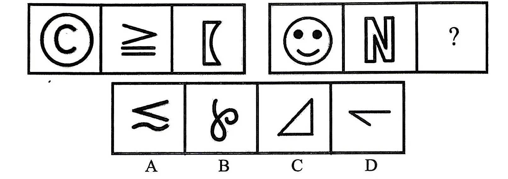
答案点击查看答案与解析
从所给的四个选项中，选择最合适的一个填入问号处，使之呈现一定的规律性：
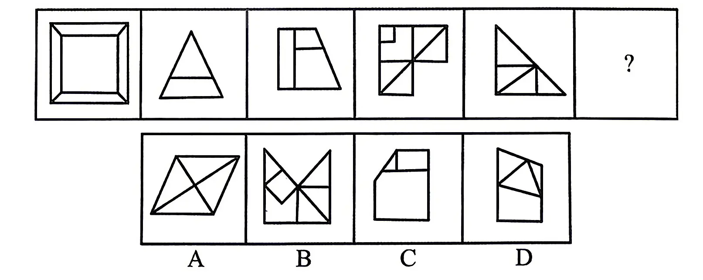
答案点击查看答案与解析
从所给的四个选项中，选择最合适的一个填入问号处，使之呈现一定的规律性：
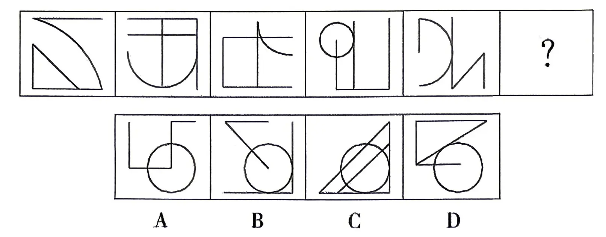
答案点击查看答案与解析
从所给的四个选项中，选择最合适的一个填入问号处，使之呈现一定的规律性：
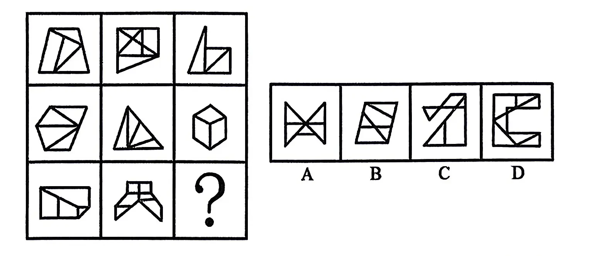
答案点击查看答案与解析
从所给的四个选项中，选择最合适的一个填入问号处，使之呈现一定的规律性：
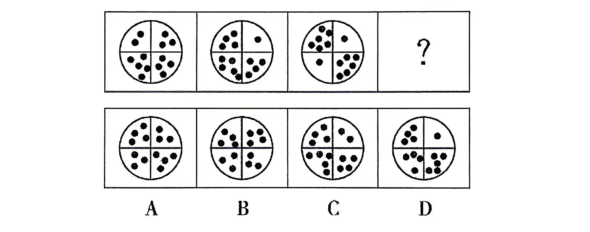
答案点击查看答案与解析
把下面的六个图形分为两类，使每一类图形都有各自共同的特征或规律，分类正确的一项是：
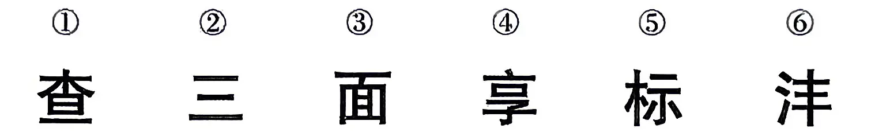
A.①②⑥，③④⑤ B.①③④，②⑤⑥ C.①③⑥，②④⑤ D.①④⑤，②③⑥
答案点击查看答案与解析
下列纸盒的外表面展开图中，哪一个折叠成的纸盒和其他三个不一样？
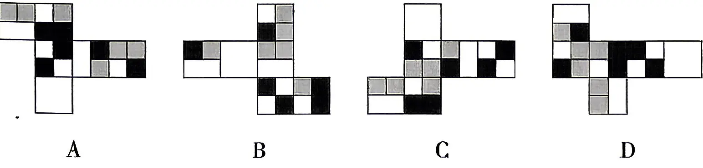
答案点击查看答案与解析
左图为15个白色和5个灰色正方体组合而成的多面体，将其经A.B、C三个顶点切开后，正确的截面是：
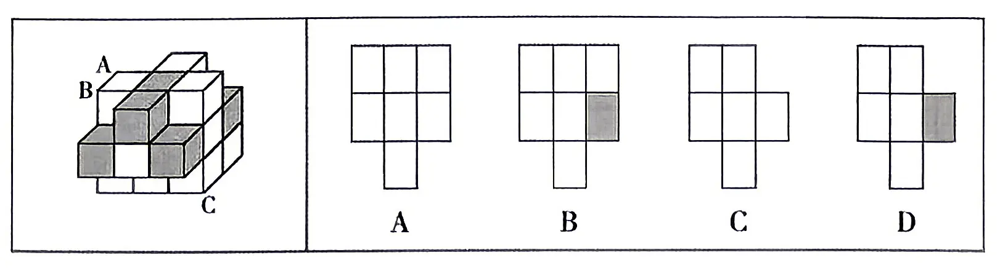
答案点击查看答案与解析
把下面的六个图形分为两类，使每一类图形都有各自的共同特征或规律，分类正确的一项是：
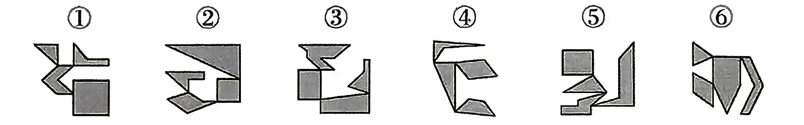
A.①③④，②⑤⑥ B.①③⑤，②④⑥ C.①②⑥，③④⑤ D.①④⑥，②③⑤
答案点击查看答案与解析
把下面的六个图形分为两类，使每一类图形都有各自的共同特征或规律，分类正确的一项是：
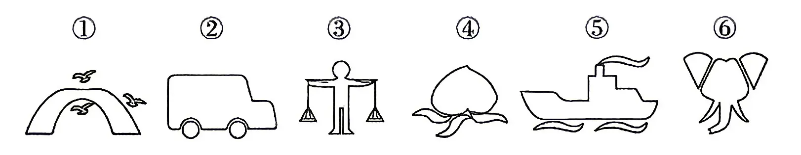
A.①②④，③⑤⑥ B.①③⑥，②④⑤ C.①④⑤，②③⑥ D.①⑤⑥，②③④
答案点击查看答案与解析
照护综合征是指一个人因专注于照护生病、受伤或残疾的亲人而过度劳累或精神上陷于压抑状态，导致身心健康受损的病症。根据上述定义，下列不属于照护综合征的是：
A.“照顾生病的父母半年，我感觉整个人都陷入了黑暗，现在还没缓过劲来，电话铃声一响整个人就哆嗦。”
B.“这家坐轮椅的老爷子太难伺候了，累死累活照顾他还经常挨骂，还要被扣工资，我受不了了，不想干了。”
C.“我起早贪黑照顾了瘫痪在床的父亲两年，他还总不满意，经常训斥我。现在好了，我也累倒了，住院了。”
D.“昨天奶奶说，她一个人照顾双目失明的爷爷太累了，要么儿女们轮流来照顾，要么找个专职保姆，反正她受不了，不管了。”
答案点击查看答案与解析
史翠珊效应是指试图阻止大众了解某些内容，或压制特定的网络信息，结果适得其反，使该内容或信息被更多人所了解。根据上述定义，下列体现史翠珊效应的是：
A.某煤矿老板为掩盖事故真相，向调查记者行贿，行贿过程被酒店监控全程记录下来
B.某自媒体散布当地某企业偷税漏税的谣言，该企业随即在网上发布辟谣视频，引发了更多关注
C.某明星丑闻被一家媒体掌握，该明星威胁媒体不许曝光此事，被媒体将威胁短信和丑闻一并曝光，结果上了热搜
D.某网红故意与人发生冲突并将冲突视频发布到网上，视频爆火之后因害怕承担刑事责任，该网红主动删除视频
答案点击查看答案与解析
《通用规范汉字表》将收录的汉字分为三个等级：一级字为常用字，主要满足基础教育和文化普及的基本用字需要；二级字的使用度仅次于一级字，主要满足出版印刷、辞书编纂和信息处理等方面的一般用字需要；三级字是姓氏人名、地名、科学技术术语和中小学语文教材文言文用字中未进入一、二级字表的较通用的字，主要满足信息化时代与大众生活密切相关的专门领域的用字需要。根据上述定义，下列汉字分级最有可能正确的是：
A.一级字：秀；二级字：砫；三级字：闸 B.一级字：甩；二级字：偻；三级字：昄 C.一级字：坋；二级字：苓；三级字：蒄 D.一级字：焘；二级字：泻；三级字：兀
答案点击查看答案与解析
三明治法则是指在批评他人时把批评夹在表扬或期待中间，从而使被批评者更好地接受批评和建议。根据上述定义，下列没有体现三明治法则的是：
A.“看得出你调研下了很大功夫，但在撰写正文时分析角度过于单一，可惜了你辛苦调研得来的宝贵数据。”
B.“这项业务你一向做得不错，这次怎么完成得这么马虎？我相信以你的能力一定可以想出妥当的补救办法。”
C.“你以前总喜欢打断别人说话，今天竟然能够等她表达完意见再发言，我真感到惊讶。你今后要是能一直这样就好了。”
D.“人格独立是你的优点，但这件事如果你当时解释一下大家就理解了，我们都不想因为一个误会而失去你这么好的朋友。”
答案点击查看答案与解析
汉语中有一类名词连名词的复合词，其词素组合顺序为，前一个词素是被修饰、被限定的成分，后一个词素是修饰、限定成分，称为“正偏式”名一名复合词。根据上述定义，下列属于“正偏式”名一名复合词的是：
A.火舌 B.布衣 C.兄弟 D.车速
答案点击查看答案与解析
节能诊断是指根据企业工艺流程及流程中每个生产节点上的能源消耗状况和能源利用率等情况，发现问题，并用系统学方法找出问题的根本，预测节能潜力，提出具体技术措施的过程。根据上述定义，下列可能属于节能诊断的是：
A.某机构按照国家标准对某建筑的能源利用率进行计算评估
B.某政府部门组织专家对其办公大楼新建的供暖设备进行验收
C.某机构对一企业工艺流程中的工业固废综合利用情况进行评估
D.某咨询机构根据一钢铁企业工艺流程中能耗情况提出节能建议
答案点击查看答案与解析
词语遮蔽效应是指当需要记忆的事件难以用语言来把握时，词语化可能反而会有损记忆，导致记忆错觉的现象。根据上述定义，下列体现词语遮蔽效应的是：
A.在学习新课文时反复朗读背诵的学生比未反复朗读背诵的学生默写成绩更好
B.在外出采风时认真临摹风景的人比用语言文字将风景描写出来的人对风景细节的记忆更为深刻
C.初次品酒时用语言描述不同白酒味道的人，对白酒的再认好于那些没有对酒味进行语言描述的人
D.两个人同时目击犯罪过程，用语言复述现场情况的人对犯罪过程的记忆比另一个没有用语言复述的人更不准确
答案点击查看答案与解析
角误差是指被评价者在某一方面表现不佳，导致评价者对此人其他所有方面均给予较低的评价。根据上述定义，下列属于角误差的是：
A.甲匆忙参加一项面试，没准备正式的服装，尽管面试表现优异，但最终面试分数很低
B.乙的单位在年度绩效考核中，考核组给全单位员工的评语相差不多，全部员工都被评为“合格”
C.丙在公司的比赛中获得技能大奖，部门领导给予其能力突出、团结同事、爱岗敬业的评价，丙因此获得部门年度优秀员工荣誉
D.丁在单位参加了一个核心技术攻关组并与同组的同事一起取得了理想的成果，但其他组员太出色了，导致丁的绩效评价低于应有等级
答案点击查看答案与解析
无意识代偿是指人在无意识状态下通过寻求某方面的满足或成就，来弥补或掩盖自己在另一方面的弱点、缺陷或挫败感的策略。根据上述定义，下列属于无意识代偿的是：
A.穷困潦倒的老张，靠给村里人做短工维持生计，但在与别人闲聊时，总是会不经意提起自己祖上是大官
B.一出生就没有双臂的小王，从小就自立自强，她学会用脚料理自己的生活，用脚写字，不仅顺利读完高中，还考上了大学
C.智商低于常人的阿甘，学业不佳，且因背部畸形在腿部装有金属支架，但一次被追逐的经历却意外开启了他惊人的运动天赋
D.长期忍受丈夫肢体与语言暴力的小赛，为维持亲朋好友对自己婚姻美满的印象，常在社交平台上晒出与丈夫摆拍的合影“秀恩爱”
答案点击查看答案与解析
第三航权是一个国家授予另一个国家定期或不定期国际航班在其领土内卸下来自承运人本国的旅客或货物的权利。第四航权是一个国家授予另一个国家定期或不定期国际航班在其领土内装上前往承运人本国的旅客或货物的权利。根据上述定义，下列体现了第四航权的是：
A.加拿大航空在洛杉矶与墨西哥城的航线市场上提供服务
B.新加坡民航飞机在飞往芝加哥航线上经停厦门，上下客货
C.中国民航飞机从北京运载货物在东京进港，然后运载乘客返回
D.美国民航飞机承运旧金山-上海航线，中间在安克雷奇加油维修
答案点击查看答案与解析
言之无文：行之不远
A.一叶障目：不见泰山 B.宁为玉碎：不为瓦全 C.藏诸名山：传之其人 D.取之不尽：用之不竭
答案点击查看答案与解析
记录：记录本
A.咨询：咨询室 B.复印：复印件 C.驾驶：驾驶证 D.存储：存储盘
答案点击查看答案与解析
风：风车：旋转
A.水：锦鲤：游动 B.雷：闪电：暴雨 C.火：木柴：燃烧 D.电：电车：行驶
答案点击查看答案与解析
政法大学：师范大学：地质大学
A.口腔医院：肿瘤医院：牙科医院 B.服装市场：批发市场：农贸市场 C.贵州银行：北京银行：人民银行 D.粤菜餐厅：法式餐厅：日料餐厅
答案点击查看答案与解析
（）对于 膝盖骨 相当于 地铁站 对于（）
A.膝盖 地铁 B.腿 站台 C.器官 列车 D.肩胛骨 终点站
答案点击查看答案与解析
消渴症是糖尿病的主要症状，其主要特征为多饮、多尿、多食及消瘦、疲乏、尿甜等。调查显示放开谷物的糖尿病患者有80%的人消渴症状较轻，甚至不存在。因此，谷物对糖尿病患者的胰岛细胞具有保护作用。以下哪项如果为真，最能削弱上述论证？
A.糖尿病患者的免疫系统会攻击胰岛细胞，导致胰岛β细胞损伤和消失，进而出现消渴症状
B.放开谷物的患者同时改变了其他饮食习惯，如增加了芹菜、苦瓜、胡萝卜等利于糖代谢的食物的摄入量
C.有些糖尿病患者放开谷物后消渴症状并没有减轻或消失
D.胰岛细胞的自我修复会增加糖尿病患者对谷物的食欲从而放开谷物
答案点击查看答案与解析
某研究者进行了一项实验，将去除包装的牛奶巧克力和白巧克力给测试者品尝，先是把测试者的眼睛蒙上，结果所有测试者都说两种巧克力味道一样。然后又让他们看着品尝，结果以前没有吃过白巧克力的6个测试者都认为两种巧克力味道不同，其中有4个认为白巧克力“奶味更浓”，其他2人认为白巧克力“巧克力味更淡”，只有1个以前吃过白巧克力的测试者在两种情况下都认为味道没有区别。下列哪项最有可能是上述现象发生的原因？
A.人们对食物味道的感知会受到颜色的影响 B.不同成分的巧克力确实存在着口感的差别 C.人们会根据价格的高低来判断食物的成分 D.同一人在不同时间对同一食物有不同评价
答案点击查看答案与解析
某单位所有正式编制员工都参加了周末举办的团建活动，该单位后勤部门所有员工都不是正式编制员工，综合部门有的员工没有参加周末举办的团建活动。由此可以推出该单位：
A.综合部门有的员工不是正式编制员工
B.有的正式编制员工不是综合部门的员工
C.后勤部门有的员工没有参加周末举办的团建活动
D.后勤部门所有员工都参加了周末举办的团建活动
答案点击查看答案与解析
金伯利岩是一种稀有的火山岩。从这些岩石上能看出火山曾猛烈喷发的痕迹，其化学和矿物成分也有别于地球上其他岩浆岩。尤其是有些金伯利岩包含厘米级大小的稀有矿物晶体，如铁尖晶橄榄石和布氏岩等。因此，人们推测这一类含有稀有矿物晶体的金伯利岩很可能来自地幔。以下哪项如果为真，最能支持上述结论？
A.布氏岩是下地幔的一种主要矿物
B.铁尖晶橄榄石只能形成于上、下地幔之间的过渡带
C.有些金伯利岩中的矿物成分在地球表面无法稳定存在
D.这类金伯利岩和原始地幔中都含有锶和钕这两种元素
答案点击查看答案与解析
一项数据显示，M市2023年电视机销量同比下降了10%。当地专家分析称、2023年电视机核心部件成本升高，整机价格上涨10%，所以M市电视机销量下降。以下哪项如果为真，最能质疑专家的观点？
A.M市七成以上学生表示平时没时间看电视
B.M市外来务工人员多，租房人群占比较高，对大型家电的消费意愿不强
C.移动互联网上的娱乐节目越来越丰富，人们对传统电视节目的兴趣越来越低
D.电视面板是电视机核心部件之一，该部件2022年平均价格比 2023年高10%
答案点击查看答案与解析
任何形式的智能生命存在，至少依赖于两个关键条件：首先，其所在星系必须有稳定的光源，以保持行星表面适宜的温差范围；其次，这种稳定的温差环境必须持续至少数十亿年。在已知的宇宙中，这两个条件同时满足的情况极为罕见。因此，我们可以推断，在其他星系中，存在与地球上相似的智能生命的可能性极小。该论证是以下列哪项为前提？
A.稳定的温差范围是智能生命存在的唯一条件
B.智能生命只可能在地球上存在，不可能在其他星系中出现
C.其他星系中的智能生命需要与地球上智能生命有相似的生存条件
D.地球上已经灭绝的某些智能生命形式可能在具有极端温差条件的星系中被发现
答案点击查看答案与解析
轻音乐的播放，有助于缓解工作压力。某研究者曾经对十位员工进行研究，他们都因为工作压力大而产生了焦虑和抑郁。研究者安排这些员工在每个工作日分别接受一小时的轻音乐播放。仅仅一周后，八位员工的焦虑和抑郁症状明显缓解，另外两位也有了明显的改善。轻音乐的播放能够调整人的心理状态，使得大脑放松，从而缓解工作压力带来的负面影响。以下哪项如果为真，最能削弱上述结论？
A.研究者在播放音乐的同时，为缓解员工的压力，还提供了小食和饮料，这可能是员工症状缓解的另一重要因素
B.十位员工中，最先缓解的四位都是女性，而男性员工的改善速度相对较慢
C.长时间播放音乐可能对员工的工作效率产生影响，其中对于需要高度集中的任务，夏季的干扰比冬季更大
D.每天一小时的非工作状态，为员工提供了休息和放松的机会，这才是他们症状缓解的真正原因
答案点击查看答案与解析
同在某单位的甲、乙、丙、丁准备休年假。他们计划于9月至12月休年假，每个人恰好选择其中一个月，各不重复。已知：
①要么甲选12月休假，要么乙选12月休假，两者必居其一；
②要么甲选9月休假，要么丙选11月休假，两者必居其一；
③如果丙选11月休假，则丁选12月休假。
根据上述信息，可以推出的结论是：
A.甲选10月休假 B.乙选10月休假 C.丙选12月休假 D.丁选11月休假
答案点击查看答案与解析
医学研究发观，爱吃咸鱼的人，患鼻咽癌的风险是不喜欢吃咸鱼者的 2-7倍。EB病毒感染，也是鼻咽癌病因之一。当出现颈部包块、血涕、耳鸣、面麻、头痛、鼻塞、视物模糊、突眼等症状，且对症治疗后又不好转，或症状反反复复，都需要警惕鼻咽癌的可能性，尤其是有鼻咽癌家族史的人群。由上述结果不可以推知的是：
A.鼻咽癌家族史的人群爱吃咸鱼 B.EB 病毒感染后可能导致鼻咽癌 C.经常吃咸鱼在一定程度上会诱发鼻咽癌 D.发现不明原因的鼻塞、耳鸣等要及时检查
答案点击查看答案与解析
甲、乙、丙三人一起逛街看到街边一个瓶子状雕塑。甲说：“这材质看着不是PP的也不是PPSU的。”乙说：“这不是PP的，是玻璃的吧。”丙说：“这不是玻璃的，这是PP的。”后来，经过查证，这三个人有一个人的两个判断都是正确的，另一个人的两个判断都是错的，第三个人的两个判断一对一错。据此可知：
A.材质是PP的 B.材质是 PPSU 的 C.材质是玻璃的 D.上面三种材质都不是
答案点击查看答案与解析
2020 年初，突如其来的新冠肺炎疫情对消费领域冲击较大，但也催生了新的消费需求、消费模式和消费习惯。为了解某市消费者在疫情期间的消费习惯和消费意向，市统计局运用网络和电话两种方式于 2020 年 4 月开展调查，调查对象为当期居住在该市的 5582 名消费者。
调查结果显示，“云消费”成为逾 7 成被访消费者在疫情期间的主要购物方式。具体来说，39.5% 的被访消费者表示疫情期间购物方式有变化，由实体店购物为主转至网上购物为主；33.8% 的被访消费者原来和现在均以网上购物为主；仍有 26.7% 的被访消费者仍以实体店购物为主。
在问及“疫情结束后，您期待哪些线下消费活动？”时，65.9% 的被访消费者期盼外出旅游观光；63.4% 的被访消费者选择外出就餐、聚会；46.0% 的被访消费者选择逛街购物；36.2% 的被访消费者选择观看电影、演出、体育比赛等。
图 1 疫情期间，被访消费者选择不同消费项目的占比（多选）（保留卷面原图）
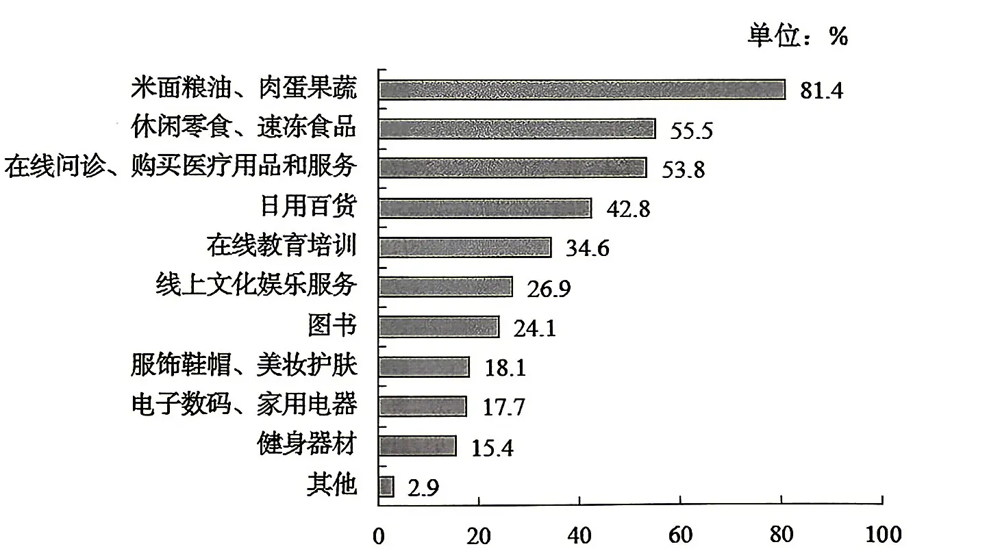
图 2 被访消费者疫情结束后会有的改变（多选）（保留卷面原图）
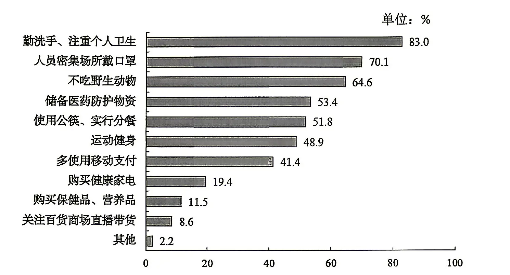
疫情期间，选择以线上购物为主的被访消费者是选择以实体店购物为主的：
A.2.7 倍 B.2.4 倍 C.1.5 倍 D.1.3 倍
答案点击查看答案与解析
下列选项中，疫情期间被访消费者选择的消费项目占比均超过五成的有：
A.米面粮油、肉蛋果蔬；日用百货
B.休闲零食、速冻食品；线上文化娱乐服务
C.在线问诊、购买医疗用品和服务；在线教育培训
D.休闲零食、速冻食品；在线问诊、购买医疗用品和服务
答案点击查看答案与解析
疫情期间，被访消费者选择在线上文化娱乐服务方面消费的有：
A.161人 B.1502人 C.1933人 D.3011人
答案点击查看答案与解析
疫情结束后，对于个人卫生安全方面，会同时选择勤洗手、注重个人卫生和人员密集场所戴口罩的被访消费者占比至少达到：
A.70.1% B.65.3% C.53.1% D.46.9%
答案点击查看答案与解析
从上述资料中不能推出的是：
A.疫情期间，“云消费”的购物方式成为被访消费者的主流消费方式
B.疫情结束后，不吃野生动物的被访消费者中一定有人储备医药防护物资
C.疫情期间在健身器材方面有消费的被访消费者中，一定有人在疫情结束后依然会选择运动健身
D.疫情结束后，期待外出旅游观光的被访消费者比例与期待外出就餐、聚会的相差2.5个百分点
答案点击查看答案与解析
2023 年末，我国共有中小微企业法人单位 1807 万家，比 2018 年末增长 115%，占全部规模企业法人单位（以下简称全部企业）的 99.8%。其中，中小微私营企业有 1526.5 万家，比 2018 年末增长 166.9%，占全部企业的 84.4%，比 2018 年末提高了 16.5 个百分点。
2023 年末，中小微企业吸纳就业人员 23300.4 万人，比 2018 年末增长 5.5%，占全部企业就业人员的比重为 79.4%，比 2018 年末提高了 0.1 个百分点。全年营业收入达到 188.2 万亿元，占全部企业全年营业收入的 68.2%。拥有资产总计达到 402.6 万亿元，占全部企业资产总计的 77.1%。
从区域分布看，2023 年末，中部地区中小微企业 384.8 万家，比 2018 年末增长 129.9%，占全部中小微企业的比重比 2018 年末提高了 1.4 个百分点。西部地区中小微企业 307.2 万家，比 2018 年末增长 131%，占全部中小微企业的比重比 2018 年末提高了 1.2 个百分点。东部地区中小微企业 1115 万家，比 2018 年末增长 106.3%。
从行业分布看，2023 年末，在我国全部中小微企业中，信息传输、软件和信息技术服务业企业 91 万家，占比为 5.0%，比 2018 年末提高了 2.4 个百分点；科学研究和技术服务业企业 114.1 万家，比 2018 年末增加 81.5 万家，增长 250%，占比 6.3%，比 2018 年末提高了 2.4 个百分点。
2018年末西部地区中小微企业法人单位数量约为：
A.93万家 B.133 万家 C.177万家 D.235 万家
答案点击查看答案与解析
若2018年全部企业全年营业收入可达到 2023 年水平，且80%来自于中小微企业，则2018年平均每家中小微企业法人单位的营业收入约为：
A.1040 万元 B.2236万元 C.2627 万元 D.3342 万元
答案点击查看答案与解析
2023年末全部规模企业法人单位数量与2018年末相比约增长了：
A.115% B.95% C.84% D.72%
答案点击查看答案与解析
2023年末中小微企业平均每家法人单位的就业人员与2018年末相比约：
A.增长 50.9% B.增长 97.8% C.降低 50.9% D.降低 97.8%
答案点击查看答案与解析
能够从上述资料中推出的是：
A.2023年末全部企业拥有资产总计不足500万亿元
B.2023 年末中小微私营企业法人单位数量占中小微企业的比重为 83.9%
C.2023年末东部地区中小微企业法人单位数量占全部中小微企业的比重比2018年末下降了2.6个百分点
D.2023年末信息传输、软件和信息技术服务业企业法人单位数量比2018年末增长95%
答案点击查看答案与解析
2019 年 1-10 月，江苏民航机场旅客吞吐量 4901 万人次，同比增长 13.4%，增速比华东地区（六省一市）高 6.2 个百分点，比上海高 9.7 个百分点，比浙江高 5.7 个百分点，比山东高 4.4 个百分点，比福建高 8.7 个百分点，比江西高 6.9 个百分点，与安徽持平。
表 2012-2018 年江苏民航机场旅客吞吐量情况（单位：万人次；数值据原表逐格核对）
| 年份 | 南京禄口 | 无锡硕放 | 常州奔牛 | 南通兴东 | 徐州观音 | 扬州泰州 | 盐城南洋 | 淮安涟水 | 连云港白塔埠 |
|---|---|---|---|---|---|---|---|---|---|
| 2012 | 1400 | 324 | 108 | 39 | 97 | 25 | 32 | 35 | 48 |
| 2013 | 1501 | 359 | 153 | 68 | 111 | 61 | 35 | 40 | 56 |
| 2014 | 1628 | 418 | 186 | 93 | 127 | 71 | 53 | 52 | 57 |
| 2015 | 1916 | 461 | 181 | 116 | 132 | 87 | 85 | 50 | 71 |
| 2016 | 2236 | 556 | 196 | 154 | 149 | 143 | 121 | 86 | 85 |
| 2017 | 2582 | 668 | 251 | 201 | 192 | 184 | 130 | 129 | 109 |
| 2018 | 2858 | 721 | 333 | 277 | 252 | 238 | 182 | 152 | 152 |
2019年1-10月，江苏民航机场旅客吞吐量同比增加：
A.398万人次 B.435 万人次 C.579 万人次 D.657 万人次
答案点击查看答案与解析
2013-2018年江苏9个民航机场中旅客吞吐量逐年增加的机场个数是：
A.6 个 B.7个 C.8 个 D.9 个
答案点击查看答案与解析
2019年1-10月，华东地区民航机场旅客吞吐量同比增速最慢的省（市）是：
A.上海 B.江西 C.福建 D.山东
答案点击查看答案与解析
2012-2018年江苏9个民航机场中旅客吞吐量年均增速最快的机场是：
A.南京禄口 B.南通兴东 C.扬州泰州 D.盐城南洋
答案点击查看答案与解析
从上述资料中能够推出的是：
A.2019年1-10月安徽民航机场旅客吞吐量在华东地区同比增加最多
B.2018年南京禄口民航机场旅客吞吐量大于江苏其他8个民航机场之和
C.2019年1-10月上海民航机场旅客吞吐量占华东地区的比重同比有所提高
D.2012-2018年常州奔牛民航机场旅客吞吐量年均增量比连云港白塔埠的多2倍多
答案点击查看答案与解析
图 1 2013-2017 年我国家政服务企业数量统计情况（保留卷面原图）
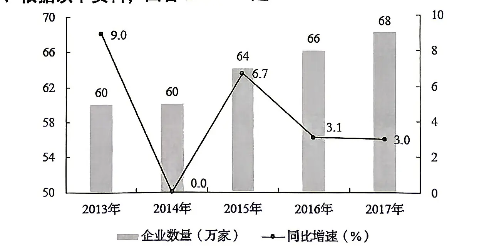
图 2 2013-2017 年我国家政服务行业营业收入统计情况（保留卷面原图）
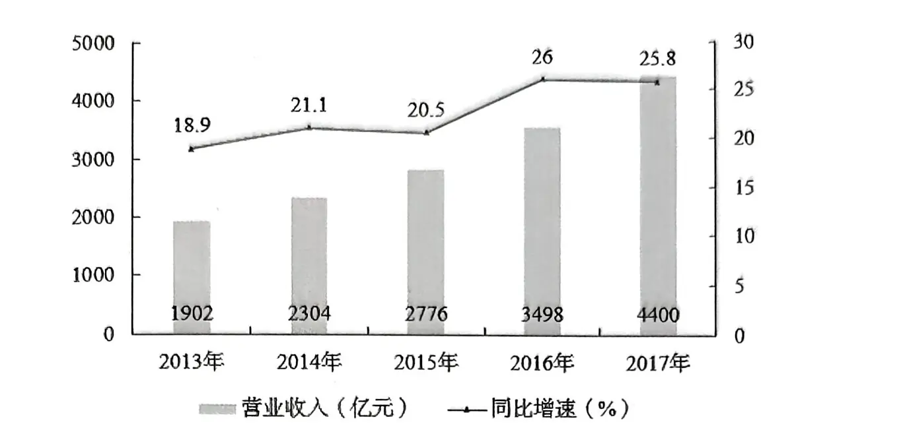
与2012年相比，2017年我国家政服务企业增加了多少万家？
A.13 B.9 C.6 D.4
答案点击查看答案与解析
2013-2017年，我国家政服务行业营业收入同比增量低于500亿元的年份有几个？
A.5 B.4 C.3 D.2
答案点击查看答案与解析
2013-2017年，我国家政服务行业营业收入总计为多少亿元？
A.14650 B.14880 C.15240 D.15680
答案点击查看答案与解析
以下折线图中，能准确反映2013-2015年各年我国平均每家家政服务企业营业收入增长率的是：
答案点击查看答案与解析
能够从上述资料中推出的是：
A.2013-2017年，我国家政服务企业数量同比增速低于上年水平的年份有3年
B.2013-2017年，我国家政服务行业营业收入同比增速第三高的年份，当年平均每家家政服务企业的营业收入高于40万元
C.假设2013-2017年每年均有新的家政服务企业成立，且无家政服务企业退出市场，2017年我国新增的家政服务企业占当年家政服务企业总数的比重高于2016年
D.2013-2017年，我国家政服务行业营业收入同比增量最高的年份其增长量约是最低年份的3倍